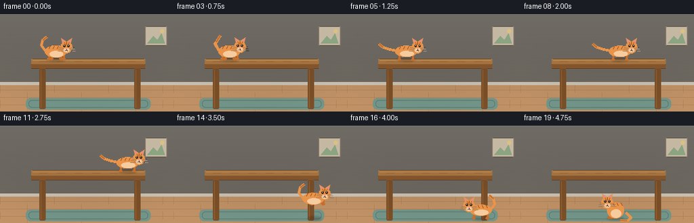
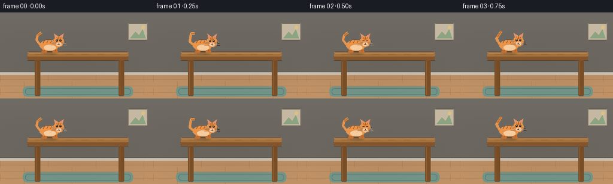

CODING AGENTS AS PIXEL WORLD MODELS
traex/Seed-2.1-Pro-0915 · dynamic_spatial_relationship_0010
点击播放 · 原生 RGB 像素
逐轮保存的候选
回放视频、检查图与代码变化。
每份候选均可单独播放。实际图片检查记录在下方工具轨迹中。
候选 01播放与检查图
点击播放 · 原生 RGB 像素


展开代码变化
--- 上一保存版本
+++ 本次保存版本
@@ -0,0 +1,330 @@
+"""Text-to-video: a cat on a table runs to the bottom (underside) of the table.
+
+Procedural 2D animation rendered with PIL at 2x supersampling.
+20 frames, 256x144, 4 fps. No external assets or models.
+"""
+from pathlib import Path
+import math
+
+import numpy as np
+from PIL import Image, ImageDraw, ImageFilter
+
+import artifact_io
+
+W, H = 256, 144
+S = 2 # supersampling factor
+SW, SH = W * S, H * S
+N_FRAMES, FPS = 20, 4.0
+
+# ---------------------------------------------------------------- palette
+ORANGE = (232, 148, 74)
+ORANGE_DARK = (197, 110, 44)
+BELLY = (246, 203, 158)
+STRIPE = (176, 92, 34)
+DARK = (58, 40, 30)
+PINK = (228, 140, 140)
+WHITE = (245, 240, 232)
+WOOD_TOP = (176, 122, 66)
+WOOD_EDGE = (140, 90, 46)
+WOOD_LEG = (124, 80, 40)
+WALL_TOP = (239, 231, 218)
+WALL_BOT = (220, 210, 194)
+FLOOR = (193, 146, 102)
+FLOOR_LINE = (168, 122, 80)
+RUG = (116, 150, 138)
+RUG_EDGE = (92, 124, 112)
+
+
+# ------------------------------------------------------------- primitives
+def sc_box(box):
+ return tuple(v * S for v in box)
+
+
+def ellipse(draw, box, fill, outline=None, width=1):
+ draw.ellipse(sc_box(box), fill=fill, outline=outline,
+ width=width * S if outline else 1)
+
+
+def polygon(draw, pts, fill, outline=None):
+ draw.polygon([(x * S, y * S) for x, y in pts], fill=fill, outline=outline)
+
+
+def line(draw, pts, fill, width=1, joint="curve"):
+ draw.line([(x * S, y * S) for x, y in pts], fill=fill,
+ width=max(1, int(round(width * S))), joint=joint)
+
+
+def rounded(draw, box, radius, fill=None, outline=None, width=1):
+ draw.rounded_rectangle(sc_box(box), radius=radius * S, fill=fill,
+ outline=outline, width=width * S if outline else 1)
+
+
+# ------------------------------------------------------------- background
+def make_background():
+ img = Image.new("RGB", (SW, SH))
+ d = ImageDraw.Draw(img)
+
+ # vertical wall gradient
+ for y in range(102):
+ t = y / 102
+ col = tuple(int(WALL_TOP[i] + (WALL_BOT[i] - WALL_TOP[i]) * t) for i in range(3))
+ d.line([(0, y * S), (SW, y * S)], fill=col)
+
+ # framed picture on the wall
+ rounded(d, (214, 18, 246, 46), 2, fill=(214, 200, 178),
+ outline=(150, 132, 108), width=1)
+ polygon(d, [(217, 43), (226, 32), (232, 38), (238, 28), (243, 43)],
+ fill=(150, 178, 140))
+ ellipse(d, (236, 22, 242, 28), fill=(236, 210, 140))
+
+ # baseboard
+ d.rectangle(sc_box((0, 100, W, 105)), fill=(206, 196, 180))
+ d.line([(0, 105 * S), (SW, 105 * S)], fill=(180, 168, 150), width=S)
+
+ # floor planks
+ d.rectangle(sc_box((0, 105, W, H)), fill=FLOOR)
+ for y in range(112, H, 11):
+ d.line([(0, y * S), (SW, y * S)], fill=FLOOR_LINE, width=max(1, S // 2))
+ for row, y in enumerate(range(105, H, 11)):
+ for x in range((row % 2) * 40, W, 80):
+ d.line([(x * S, y * S), (x * S, min(H, y + 11) * S)],
+ fill=FLOOR_LINE, width=max(1, S // 2))
+
+ # rug under the table
+ rounded(d, (38, 124, 222, 141), 7, fill=RUG)
+ rounded(d, (42, 127, 218, 138), 5, outline=RUG_EDGE, width=1)
+
+ # table: legs first, then slab
+ for lx in (58, 198):
+ rounded(d, (lx, 80, lx + 9, 140), 2, fill=WOOD_LEG)
+ d.line([((lx + 2) * S, 82 * S), ((lx + 2) * S, 138 * S)],
+ fill=(150, 100, 54), width=S)
+ rounded(d, (46, 66, 214, 74), 2, fill=WOOD_TOP) # tabletop slab
+ d.rectangle(sc_box((46, 74, 214, 80)), fill=WOOD_EDGE) # front edge
+ d.line([(48 * S, 68 * S), (212 * S, 68 * S)], fill=(205, 152, 96), width=S)
+ for gx in range(58, 210, 26): # wood grain
+ d.line([(gx * S, 70 * S), ((gx + 12) * S, 70 * S)],
+ fill=(150, 98, 52), width=max(1, S // 2))
+
+ # gentle overhead vignette
+ shade = Image.new("L", (SW, SH), 0)
+ sd = ImageDraw.Draw(shade)
+ sd.ellipse(sc_box((-40, -90, W + 40, 120)), fill=70)
+ shade = shade.filter(ImageFilter.GaussianBlur(30 * S))
+ dark_layer = Image.new("RGB", (SW, SH), (30, 26, 22))
+ img = Image.composite(dark_layer, img, shade.point(lambda v: int(v * 0.35)))
+ return img
+
+
+BACKGROUND = make_background()
+TABLE_SURFACE_Y = 66 # feet rest here while on the table
+FLOOR_Y = 136 # feet rest here on the floor
+
+
+# ---------------------------------------------------------------- cat
+def tail_points(cx, cy, facing, phase, mood):
+ """Polyline for the tail, originating at the rear of the body."""
+ f = facing
+ base_x, base_y = cx - f * 15, cy - 1
+ if mood == "run": # streaming backward
+ sway = math.sin(phase) * 2
+ pts = [(base_x, base_y),
+ (base_x - f * 10, base_y - 2 + sway),
+ (base_x - f * 19, base_y - 5 - sway),
+ (base_x - f * 25, base_y - 10 + sway)]
+ elif mood == "sit": # curled around the body
+ pts = [(base_x, base_y + 4),
+ (base_x - f * 8, base_y + 12),
+ (base_x - f * 2, base_y + 17),
+ (base_x + f * 8, base_y + 16)]
+ else: # idle / walk: upright swish
+ sway = math.sin(phase) * 3
+ pts = [(base_x, base_y),
+ (base_x - f * 6, base_y - 8 + sway),
+ (base_x - f * 4, base_y - 16 - sway),
+ (base_x + f * 2, base_y - 21 + sway * 0.5)]
+ return pts
+
+
+def draw_leg(d, hip, foot, facing, tucked):
+ if tucked:
+ knee = ((hip[0] + foot[0]) / 2 + facing * 3, (hip[1] + foot[1]) / 2 - 3)
+ line(d, [hip, knee, foot], ORANGE_DARK, width=3.2)
+ else:
+ line(d, [hip, foot], ORANGE_DARK, width=3.2)
+ ellipse(d, (foot[0] - 2.6, foot[1] - 1.6, foot[0] + 2.6, foot[1] + 1.8),
+ fill=ORANGE_DARK)
+
+
+def draw_cat(base_img, cx, cy, facing, mood, cycle=0.0, squash=1.0, blink=False):
+ """Draw cat with body center (cx, cy). facing: +1 right, -1 left."""
+ layer = Image.new("RGBA", (SW, SH), (0, 0, 0, 0))
+ d = ImageDraw.Draw(layer)
+ f = facing
+ bob = 0.0
+
+ # ---- pose-derived geometry
+ if mood in ("run", "walk"):
+ speed = 1.0 if mood == "run" else 0.5
+ theta = 2 * math.pi * cycle * speed
+ bob = math.sin(theta * 2) * 1.2
+ amp, lift = (7.0, 5.0) if mood == "run" else (4.5, 3.0)
+ leg_defs = [(-10, 0.0), (-10, math.pi), (10, math.pi), (10, 0.0)]
+ legs = []
+ for off, phase in leg_defs:
+ hip = (cx + f * off, cy + 2)
+ dx = f * amp * math.sin(theta + phase)
+ dy = -max(0.0, math.sin(theta + phase)) * lift
+ legs.append((hip, (hip[0] + dx, hip[1] + 10 + dy), False))
+ rx, ry = 16.5, 8.2
+ head_c = (cx + f * 17, cy - 7 + bob)
+ elif mood == "jump":
+ legs = [
+ ((cx - f * 10, cy + 2), (cx - f * 4, cy + 7), True),
+ ((cx - f * 9, cy + 2), (cx - f * 2, cy + 8), True),
+ ((cx + f * 10, cy + 2), (cx + f * 14, cy + 7), True),
+ ((cx + f * 9, cy + 2), (cx + f * 15, cy + 8), True),
+ ]
+ rx, ry = 16.0, 8.6
+ head_c = (cx + f * 17, cy - 8)
+ elif mood == "sit":
+ rx, ry = 12.5, 12.0
+ head_c = (cx + f * 12, cy - 12)
+ legs = [
+ ((cx + f * 6, cy + 2), (cx + f * 6, cy + 11), False),
+ ((cx + f * 9, cy + 2), (cx + f * 9, cy + 11), False),
+ ]
+ else: # idle
+ legs = [
+ ((cx - f * 10, cy + 2), (cx - f * 10, cy + 11), False),
+ ((cx - f * 6, cy + 2), (cx - f * 6, cy + 11), False),
+ ((cx + f * 8, cy + 2), (cx + f * 8, cy + 11), False),
+ ((cx + f * 12, cy + 2), (cx + f * 12, cy + 11), False),
+ ]
+ rx, ry = 16.0, 9.0
+ head_c = (cx + f * 16, cy - 7 + math.sin(cycle * 2 * math.pi) * 0.6)
+
+ cy += bob
+ rx *= squash
+ ry /= squash
+
+ # ---- tail (behind body)
+ tpts = tail_points(cx, cy, f, cycle * 2 * math.pi, mood)
+ line(d, tpts, ORANGE, width=4.2)
+ line(d, tpts[-2:], ORANGE_DARK, width=2.0)
+
+ # ---- legs
+ for hip, foot, tucked in legs:
+ draw_leg(d, hip, foot, f, tucked)
+
+ # ---- body
+ ellipse(d, (cx - rx, cy - ry, cx + rx, cy + ry), fill=ORANGE)
+ ellipse(d, (cx - rx * 0.55, cy - ry * 0.1, cx + rx * 0.7, cy + ry * 0.95),
+ fill=BELLY)
+ for ox in (-8, -2, 4): # back stripes
+ line(d, [(cx + f * ox, cy - ry + 1), (cx + f * (ox - 2), cy - ry + 5)],
+ STRIPE, width=1.6)
+
+ # ---- head
+ hx, hy = head_c
+ hr = 8.6
+ polygon(d, [(hx - 6, hy - 5), (hx - 8, hy - 13), (hx - 1, hy - 8)], fill=ORANGE)
+ polygon(d, [(hx + 6, hy - 5), (hx + 8, hy - 13), (hx + 1, hy - 8)], fill=ORANGE)
+ polygon(d, [(hx - 5.5, hy - 6.5), (hx - 6.5, hy - 11.5), (hx - 2.5, hy - 8)], fill=PINK)
+ polygon(d, [(hx + 5.5, hy - 6.5), (hx + 6.5, hy - 11.5), (hx + 2.5, hy - 8)], fill=PINK)
+ ellipse(d, (hx - hr, hy - hr + 1, hx + hr, hy + hr + 1), fill=ORANGE)
+ ellipse(d, (hx - 5, hy + 2, hx + 5, hy + 8), fill=BELLY)
+ line(d, [(hx, hy - 7), (hx, hy - 3)], STRIPE, width=1.3)
+ line(d, [(hx - 3.5, hy - 6.5), (hx - 2, hy - 3)], STRIPE, width=1.2)
+ line(d, [(hx + 3.5, hy - 6.5), (hx + 2, hy - 3)], STRIPE, width=1.2)
+ if blink:
+ line(d, [(hx - 4.5, hy - 1), (hx - 1.5, hy - 1)], DARK, width=1.2)
+ line(d, [(hx + 1.5, hy - 1), (hx + 4.5, hy - 1)], DARK, width=1.2)
+ else:
+ for ex in (hx - 3, hx + 3):
+ ellipse(d, (ex - 1.7, hy - 2.6, ex + 1.7, hy + 0.8), fill=DARK)
+ ellipse(d, (ex - 0.6, hy - 2.2, ex + 0.4, hy - 1.2), fill=WHITE)
+ polygon(d, [(hx - 1.2, hy + 2.6), (hx + 1.2, hy + 2.6), (hx, hy + 4.2)], fill=PINK)
+ line(d, [(hx, hy + 4.2), (hx, hy + 5.2)], DARK, width=0.8)
+ line(d, [(hx, hy + 5.2), (hx - 1.6, hy + 6)], DARK, width=0.8)
+ line(d, [(hx, hy + 5.2), (hx + 1.6, hy + 6)], DARK, width=0.8)
+ for side in (-1, 1):
+ for k in range(3):
+ wy = hy + 2.5 + k * 1.8
+ line(d, [(hx + side * 4, wy),
+ (hx + side * (11 + k), wy - 1.5 + k)],
+ (120, 100, 84), width=0.7)
+
+ base_img.alpha_composite(layer)
+
+
+def draw_shadow(base_img, x, ground_y, w, alpha):
+ layer = Image.new("RGBA", (SW, SH), (0, 0, 0, 0))
+ d = ImageDraw.Draw(layer)
+ d.ellipse(sc_box((x - w, ground_y - 3, x + w, ground_y + 3)),
+ fill=(40, 30, 22, int(max(0, min(1, alpha)) * 110)))
+ layer = layer.filter(ImageFilter.GaussianBlur(1.5 * S))
+ base_img.alpha_composite(layer)
+
+
+# ------------------------------------------------------------- timeline
+def frame_plan(t):
+ """Return (cx, cy, facing, mood, cycle, squash, shadow_info, blink)."""
+ if t <= 3: # idle on table
+ return 82, TABLE_SURFACE_Y - 11, +1, "idle", t / 4.0, 1.0, \
+ ("table", 82), (t == 2)
+ if t <= 11: # run across tabletop
+ u = (t - 4) / 7.0
+ e = 0.5 - 0.5 * math.cos(math.pi * u)
+ x = 82 + (188 - 82) * e
+ return x, TABLE_SURFACE_Y - 11, +1, "run", (t - 4) * 0.5, 1.0, \
+ ("table", x), False
+ jump = { # hop off the right edge
+ 12: (192, TABLE_SURFACE_Y - 15, 0.0),
+ 13: (200, 82, 0.25),
+ 14: (206, 108, 0.6),
+ 15: (208, FLOOR_Y - 11, 1.0),
+ }[t]
+ x, cy, prog = jump
+ squash = 1.18 if t == 15 else 1.0
+ return x, cy, +1, "jump", 0.0, squash, ("floor", 208, prog), False
+
+
+def render_frame(t):
+ img = BACKGROUND.copy().convert("RGBA")
+
+ if t <= 15:
+ cx, cy, facing, mood, cycle, squash, shadow, blink = frame_plan(t)
+ if shadow[0] == "table":
+ draw_shadow(img, shadow[1], TABLE_SURFACE_Y + 1, 13, 0.55)
+ else:
+ _, sx, prog = shadow
+ draw_shadow(img, sx, FLOOR_Y + 1, 13 - 5 * prog, 0.35 + 0.4 * prog)
+ draw_cat(img, cx, cy, facing, "jump" if mood == "jump" else
+ ("idle" if mood == "idle" else "run"),
+ cycle=cycle, squash=squash, blink=blink)
+ else: # walk underneath, then sit
+ if t == 16:
+ cx, mood, cycle = 197, "walk", 0.0
+ elif t == 17:
+ cx, mood, cycle = 178, "walk", 0.5
+ elif t == 18:
+ cx, mood, cycle = 157, "walk", 1.0
+ else:
+ cx, mood, cycle = 140, "sit", 0.0
+ draw_shadow(img, cx, FLOOR_Y + 1, 12, 0.5)
+ draw_cat(img, cx, FLOOR_Y - 11, -1, mood, cycle=cycle)
+
+ img = img.convert("RGB").resize((W, H), Image.Resampling.LANCZOS)
+ return np.asarray(img, dtype=np.uint8)
+
+
+def main():
+ frames = np.stack([render_frame(t) for t in range(N_FRAMES)], axis=0)
+ case_dir = Path(__file__).resolve().parent
+ artifact_io.save(frames, case_dir)
+ print(f"saved {frames.shape} -> {case_dir}")
+
+
+if __name__ == "__main__":
+ main()
可观测工具轨迹
实际执行的命令与返回图片。
命令 1exit 0
/bin/bash -lc 'cat prompt.txt GENERATION_RULES.md task_spec.json 2>/dev/null; ls -la'
命令 2exit 0
/bin/bash -lc 'cat artifact_io.py'
命令 3exit 0
/bin/bash -lc 'python -c "import PIL, numpy; print(PIL.__version__, numpy.__version__)"'
命令 4exit 1
/bin/bash -lc 'cd "$(pwd)" && python generate.py && ls frames | head -25'
命令 5exit 1
/bin/bash -lc 'python generate.py && ls frames | head -25 && ls -la'
命令 6exit 0
/bin/bash -lc 'python generate.py && ls frames | wc -l && ls -la pixels.npz inspection.png index.html'
保存候选 1 份；完成命令 6 次；可验证图片返回 0 张。原始 API 响应与完整日志保留在本地。